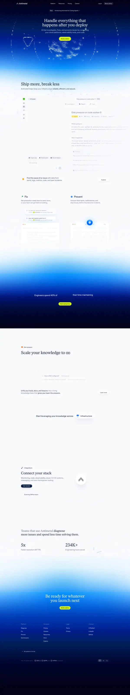
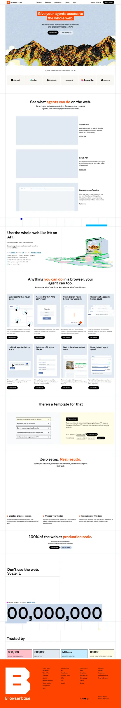

Capture URLs & images
Save full-page references or local screenshots into one library.
Moodboard Capture is an open-source Codex plugin for saving URLs or local images, writing structured artifacts to disk, and turning inspiration into reusable taste memory.
Copies the public Codex install command for this GitHub repo, then you enable Moodboard Capture in the Codex UI.
Save full-page references or local screenshots into one library.
Generate `library.jsonl`, `design-system.json`, and `design.md` artifacts.
Build a reusable profile with preferences, anti-patterns, and tensions.
Publish the `site/` folder as the repo landing page on any static host.
Save a URL or image, then append it to the active moodboard library.
Generate per-reference design readings in both JSON and Markdown.
Synthesize recurring preferences, anti-patterns, and branch directions.
Render boards from the summary and library design synthesis.


The repo ships three useful layers together: a public GitHub install path for Codex, the actual plugin package in `plugins/moodboard-capture`, and this static landing page in `site/` so the repo is shareable before anyone even opens the README.
codex plugin marketplace add ussumant/moodboard-captureAdd this GitHub repo as a Codex marketplace source, then enable Moodboard Capture in the Codex UI.
Paste the copied command into your terminal.
Open Codex and enable Moodboard Capture from the added marketplace source.
Start with natural-language capture instead of memorizing CLI commands.
Save https://antimetal.com/ to my moodboard
and explain what makes the design work.git clone https://github.com/ussumant/moodboard-capture.git
cd moodboard-capture/plugins/moodboard-capture
npm install
cd ../..
codex plugin marketplace add .~/Documents/Moodboards/Inbox
design-docs/references/<recordId>/design.md
taste-summary.json
taste-boards/
One newline-delimited record per saved URL or image, including source metadata, taste analysis, and extraction status.
A reusable Markdown doc that explains typography, color, layout, imagery, and interesting regions for one reference.
A synthesis of stable preferences, anti-patterns, tensions, and branch directions across the active moodboard library.
Branch-specific boards like `infra-editorial`, `warm-technical`, and `strange-systems` grounded in captured references.
Use the plugin in Codex, publish the `site/` folder, and keep evolving the repo in public.